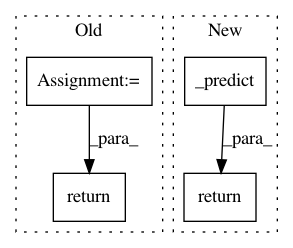

984afb6e438cabf024139785ab4b18c858af4163,secuml/core/classif/classifiers/__init__.py,Classifier,apply_pipeline,#Classifier#Any#,114
Before Change
num_instances = instances.num_instances()
if num_instances == 0:
return Predictions([], instances.ids, self.conf.multiclass)
features = instances.features.get_values()
predictions = self._predict(features)
all_probas, probas = self._get_predicted_probas(features,
num_instances)
scores = self._get_predicted_scores(features, num_instances)
return Predictions(predictions, instances.ids,
self.conf.multiclass, all_probas=all_probas,
probas=probas, scores=scores)
def _predict(self, features):
return list(self.pipeline.predict(features))
After Change
num_instances = instances.num_instances()
if num_instances == 0:
return Predictions([], instances.ids, self.conf.multiclass)
return self._predict(instances.features, instances.ids)
def _predict(self, features, instances_ids):
if features.streaming:
return self._predict_streaming(features.get_values(),
In pattern: SUPERPATTERN
Frequency: 4
Non-data size: 4
Instances
Project Name: ANSSI-FR/SecuML
Commit Name: 984afb6e438cabf024139785ab4b18c858af4163
Time: 2019-04-26
Author: anael.beaugnon@ssi.gouv.fr
File Name: secuml/core/classif/classifiers/__init__.py
Class Name: Classifier
Method Name: apply_pipeline
Project Name: dask/dask-ml
Commit Name: 811554e63022cc746fd1b0b7aa2ef5ef7a02f376
Time: 2018-10-12
Author: mrocklin@gmail.com
File Name: dask_ml/wrappers.py
Class Name: ParallelPostFit
Method Name: predict
Project Name: IndicoDataSolutions/finetune
Commit Name: 3de7afaa6dbce3d460a723615d97da7550459980
Time: 2018-09-12
Author: madison@indico.io
File Name: finetune/comparison.py
Class Name: Comparison
Method Name: predict
Project Name: fgnt/pb_bss
Commit Name: b800ecab894566a04000eaad52f0b9bf6327cdf9
Time: 2018-05-07
Author: cbj@mail.uni-paderborn.de
File Name: dc_integration/distribution/cwmm.py
Class Name: ComplexWatsonMixtureModelParameters
Method Name: predict